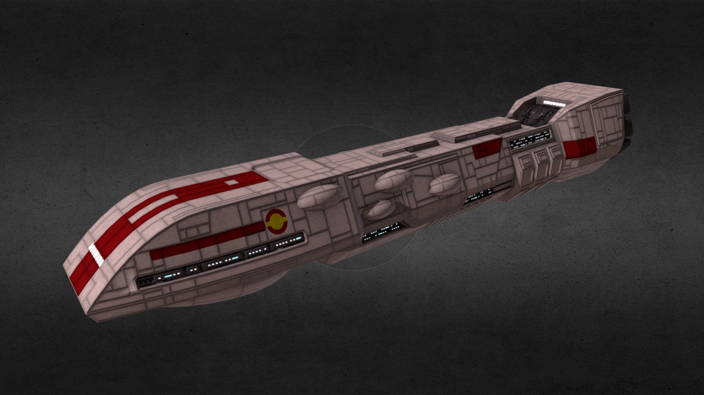
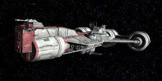
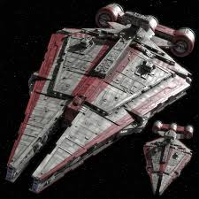

Cruisers of the Clone Wars
-
Dreadnought-class Heavy Cruiser — A robust heavy cruiser class, designed to provide long-range fire support and fleet defense with substantial firepower and armor. It serves as a backbone escort in Republic fleets.

-
Consular-class Cruiser — Originally designed as a diplomatic vessel for the Galactic Republic, this sleek cruiser is often used by Jedi for transport and reconnaissance. It carries moderate weaponry and has a light profile.

-
Arquitens-class Light Cruiser — A versatile and fast light cruiser employed by the Republic for patrol, escort, and light combat duties. It bridges the roles of frigate and corvette with its balanced armament and speed.
